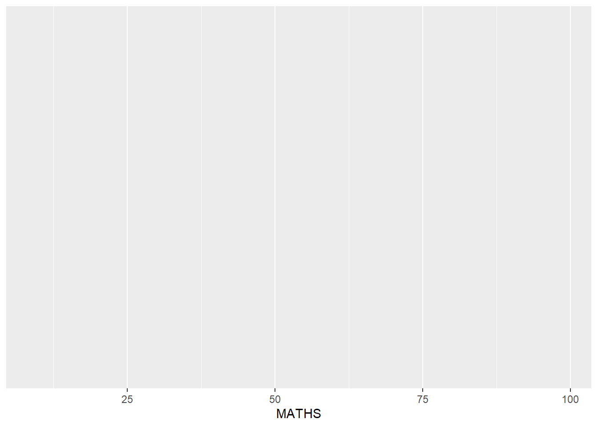
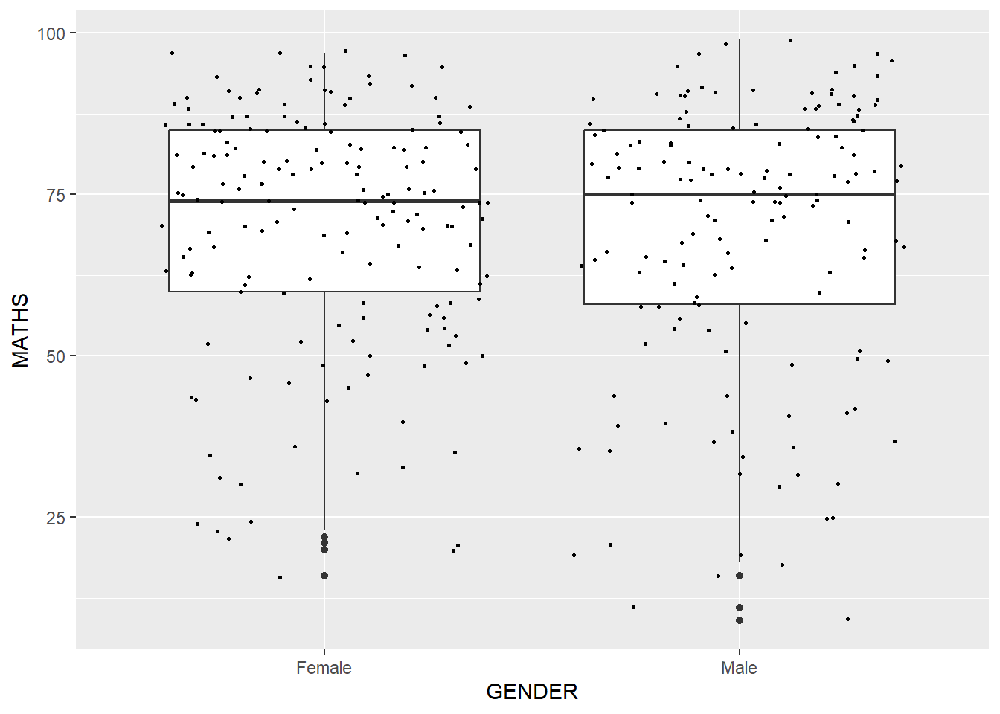

pacman::p_load(tidyverse)Hands-on Exercise 1
Getting Started
Installing and launching R packages
This code chunk below uses p_load() of pacman package to check if tidyverse packages are installed in the computer, If they are, then they will be launched into R. Also, this code chunk assumes that we have pacman package installed. If not, install pacman first.
Importing the data
This code chuk below imports the exam_data.csv into the R environment by using the read_csv() function of readr package, which is one of the tidyverse package.
exam_data <- read_csv("data/Exam_data.csv")Rows: 322 Columns: 7
── Column specification ────────────────────────────────────────────────────────
Delimiter: ","
chr (4): ID, CLASS, GENDER, RACE
dbl (3): ENGLISH, MATHS, SCIENCE
ℹ Use `spec()` to retrieve the full column specification for this data.
ℹ Specify the column types or set `show_col_types = FALSE` to quiet this message.Plotting a simple bar chart
ggplot(data = exam_data,
aes(x = RACE)) +
geom_bar()
Introducing ggplot
ggplot is an r package for declaratively creating data-driven graphics based on The Grammar of Graphics. It is part of the tidyverse family, specially designed for visual exploration and communication.
R Graphics vs ggplot
R graphics
hist(exam_data$MATHS)
ggplot2
ggplot(data = exam_data,
aes(x = MATHS)) +
geom_histogram(bins = 10,
boundary = 100,
color = "black",
fill = "grey") +
ggtitle("Distribution of Maths scores")
Then, why ggplot2? It is a powerful way of thinking about visualization, as a way of mapping between variables and the visual properties of geometric objects that you can perceive.
Grammar of Graphics
What is a statistical graph?
Grammar of graphics defines the rules of structuring mathematical and aesthetic elements into a meaningful graph. There are two principles; graphics = distinct layers of grammatical elements, and meaningful plots through aesthetic mapping.
A good grammar will allow us to gain insight into the composition of complicated graphics, and reveal unexpected connections between seemingly different graphics. A grammar provides a strong foundation for understanding a diverse range of graphics. A grammar may also help guide us on what a well-formed or correct graphic looks like, but there will still be many grammatically correct but nonsensical graphics.
Essential Graphical Elements
Data: dataset being plotted
Aesthetics: takes attributes of the data and uses them to influence visual characteristics, such as position, colours, size, shape or transparency
Geometrics: visual elements used for our data, such as point, bar or line Facets: splits the data into subsets to create multiple variations of the same graph
Statistics: statistical information that summarized data
Coordinate Systems: defines the plane on which data are mapped on the graphic
Themes: modifies all non-data components of a plot, such as main title or legend background
ggplot()
This initializes a ggplot object. The data argument defines the dataset to be used for plotting. If the dataset is not already a data.frame, it will be converted to one by fortify()
ggplot(data = exam_data)
Aesthetic mapping
Each visual characteristic can encode an aspect of the data, and can beu sed to convey information. All aesthetics of the plot are specified in the aes() function call.
The code chunk on the right addes the aesthetic element into the plot. Notice that ggplot includes the x-axis and the axis’s labels.
ggplot(data = exam_data,
aes(x = MATHS))
Geometric objects
These are the actual marks we put on a plot. Examples include:
geom_point for drawing individual points (e.g., a scatter plot)
geom_line for drawing lines
geom_smooth for drawing smoothed lines (e.g., for simple trends)
geom_bar for drawing bars
geom_histogram for for drawing binned values, the default bin is 30
geom_polygon for drawing arbitrary shapes
geom_map for drawing polygons in the shape of a map
A plot must have at least one geom; there is no upper limit. You can add a geom to a plot by using the + operator.
Geom Objects: geom_dotplot
In a dot plot, the width of a ddot corresponds to the bin width (or max width), and dots are stacked, with each dot representing one observation. Be warned: The y scale is not very useful. In fact, it can be very misleading.
In the code chunk below, geom_dotplot() of ggplot2 is used to plot a dot plot.
ggplot(data = exam_data,
aes(x = MATHS)) +
geom_dotplot(dotsize = 0.5)Bin width defaults to 1/30 of the range of the data. Pick better value with
`binwidth`.
Ths code chunk below performs the following:
scale_y_continuous() is used to turn off the y-axis
binwidth argument is used to change the binwidth to 2.5
ggplot(data = exam_data,
aes(x = MATHS)) +
geom_dotplot(binwidth = 2.5,
dotsize = 0.5) +
scale_y_continuous(NULL,
breaks = NULL)
Geom Objects: geom_histogram()
In the code chunk below,
bins argument is used to change the number of bins to 20
fill argument is used to shade the histogram with light blue color
color argument is used to change the outline color of the bars in black
ggplot(data = exam_data,
aes(x = MATHS)) +
geom_histogram(bins = 20,
color = "black",
fill = "light blue")
The code chunk below changes the interior color of the histogram by using sub-group of aesthetic().
ggplot(data = exam_data,
aes(x = MATHS,
fill = GENDER)) +
geom_histogram(bins = 20,
color = "grey30")
This approach can be used to color, fill and alpha of the geometric.
Geometric Objects: geom-density
This computes and plots kernel density estimate, which is a smoothed version of the histogram. It is a useful alternative to the histogram for continuous data that comes from an underlying smooth distribution.
The code chunk below plots the distribution of Maths scores in a kernel density estimate plot.
ggplot(data = exam_data,
aes(x = MATHS)) +
geom_density()
The code chunk below plots two kernel density lines by using colour or fill arguments of aes().
ggplot(data = exam_data,
aes(x = MATHS,
color = GENDER)) +
geom_density()
Geometric Objects: geom_boxplot
This will display a continuous value list. It visualises the five number summary statistics and all outlying points individually.
Notches are used in boxplots to help visually assess whether the medians of distributions differ. If the notches do not overlap, this is evidence that the medians are different.
The code chunk below plots the distribution of Maths scores by Gender in a notched plot instead of boxplot.
ggplot(data = exam_data,
aes(x = MATHS,
color = GENDER)) +
geom_boxplot(notch=TRUE)Combining Geometric Objects
The code chunk below plots the data points on the boxplots by using both geom_boxplot() and geom_point().
ggplot(data = exam_data,
aes(y = MATHS,
x = GENDER)) +
geom_boxplot() +
geom_point(position = "jitter",
size = 0.5)
Geometric Objects: geom_violin
This is designed for creating violin plot. It is a way of comparing multiple data distributions. With ordinary distribution curves, it is difficult to compare more than just a few distributions because the lines virtually interfere with each other.
With a violin plot, it’s easier to compare several distributions since they’re packed side by side.
The code below plots the distribution of Maths score by Gender in a violin plot.
ggplot(data = exam_data,
aes(y = MATHS,
x = GENDER)) +
geom_violin()
Statistics, stat
The Statistics functions statistically transforms data, usually as a some form of summary. There are two ways to use these functions:
add a stat_() function and override the default geom
add a geom_() function and oveeride the default stat
The code chunk below adds mean values by using stat_summary() function and overriding the default geom.
ggplot(data = exam_data,
aes(y = MATHS, x = GENDER)) +
geom_boxplot() +
stat_summary(geom = "point",
fun.y = "mean",
colour = "red",
size = 4) Warning: The `fun.y` argument of `stat_summary()` is deprecated as of ggplot2 3.3.0.
ℹ Please use the `fun` argument instead.
The code chunk below adds mean values by using geom_() function and overriding the default stat.
ggplot(data = exam_data,
aes(y = MATHS, x = GENDER)) +
geom_boxplot() +
geom_point(stat = "summary",
fun.y = "mean",
colour = "red",
size = 4) Warning in geom_point(stat = "summary", fun.y = "mean", colour = "red", :
Ignoring unknown parameters: `fun.y`No summary function supplied, defaulting to `mean_se()`
Best Fit Curve
In the code chunk below, geom_smooth() is used to plot a best fit curve on the scatteplot.
The default method used is loess:
ggplot(data = exam_data,
aes(x = MATHS, y = ENGLISH)) +
geom_point() +
geom_smooth(size = 0.5)Warning: Using `size` aesthetic for lines was deprecated in ggplot2 3.4.0.
ℹ Please use `linewidth` instead.`geom_smooth()` using method = 'loess' and formula = 'y ~ x'
The default smoothing method can be overriden:
ggplot(data = exam_data,
aes(x = MATHS, y = ENGLISH)) +
geom_point() +
geom_smooth(method = lm,
size = 0.5)`geom_smooth()` using formula = 'y ~ x'
Facets
Facetting generates small multiples (sometimes also called trellis plot), each displaying a different subset of the data, These are an alternative to aesthetics for displaying additional discrete variables. ggplot2 suports two types of facets; facet_grid() and facet_wrap().
facet_wrap()
This wraps a 1d sequence of panels into 2d. This is generally a better use of screen space than facet_grid because most displays are roughly rectangular.
The code chunk below plots a trellis plot using facet_wrap().
ggplot(data = exam_data,
aes(x = MATHS)) +
geom_histogram(bins = 20) +
facet_wrap(~ CLASS)
facet_grid()
This forms a matrix of panels defined by row and column facetting variables. It is most useful when you have two discrete variables, and all combinations of the variables exist in the data.
The code chunk below plots a trellis plot using facet_grid().
ggplot(data = exam_data,
aes(x = MATHS)) +
geom_histogram(bins = 20) +
facet_grid(~ CLASS)
Coordinates
The Coordinates functions map the position of objects onto the plane of the plot. There are a number of different possible coordinate systems to use:
coord_cartesian(): the default cartesian coordinate systems, where you specify x and y values
coord_flip(): a cartesian system with the x and y flipped
coord_fixed(): a cartesian system with a fixed aspect ration
coord_quickmap(): a coordinate system that approximates a good aspect ratio for maps
By default, the bar chart of ggplot2 is in vertical form. The code chunk below flips the horizontal bar chart into vertical bar chart by using coord_flip()
ggplot(data = exam_data,
aes(x = RACE)) +
geom_bar() +
coord_flip()
The code chunk below fixes both the y-axis and x-axis range from 0 to 100.
ggplot(data = exam_data,
aes(x = MATHS, y = ENGLISH)) +
geom_point() +
geom_smooth(method = lm,
size = 0.5) +
coord_cartesian(xlim = c(0,100),
ylim = c(0,100))`geom_smooth()` using formula = 'y ~ x'